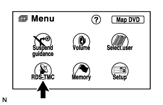
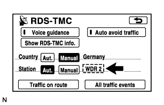
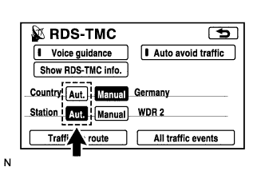

NAVIGATION SYSTEM > RDS-TMC does not Function |
| 1.CHECK NAVIGATION SETTING |
 |
Turn the audio system off and move the vehicle to a location where radio wave reception is possible.
Enter the "Menu" screen by pressing the "Menu" switch.
Enter the "RDS-TMC" screen by pressing the "RDS-TMC" switch.
 |
Check if an RDS-TMC station is selected.
|
| ||||
| OK | ||
| ||
| 2.CHECK NAVIGATION SETTING |
 |
Set the country and station to "Aut.".
Check if an RDS-TMC station is automatically selected.
|
| ||||
| OK | ||
| ||
| 3.CHECK RADIO RECEIVER |
Check if the RDS-TMC function of the radio receiver operates normally.
|
| ||||
| OK | ||
| ||